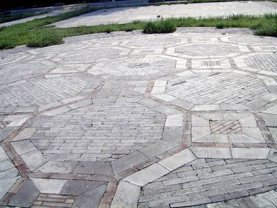
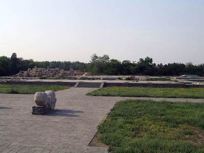
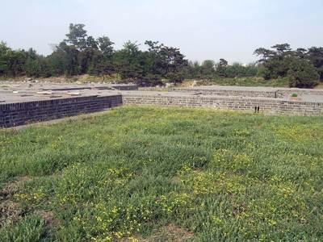
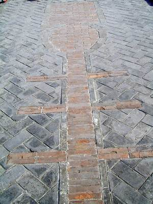
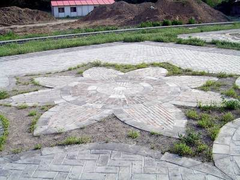
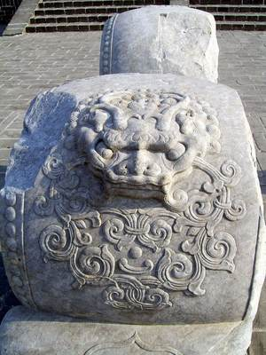
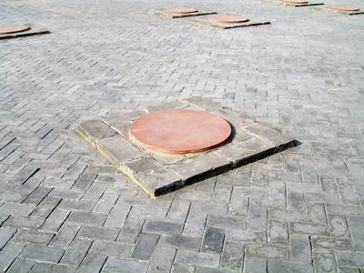
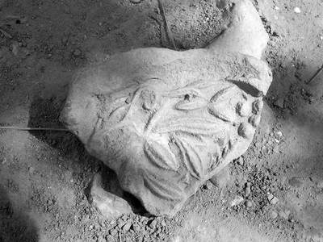

What it was
含经堂 Hanjing Tang, "Hall Holding the Classics", is the largest group of 长春园 Changchun Yuan, on the central island (E0494, E0057; Malone's No.2, E0056). The hall was new in 1747 (E0014, E0015, E0057). 日下旧闻考 Rixia Jiuwen Kao walks it from 云容水态 Yunrong Shuitai north-west by a hill path: three glazed 坊楔 arches, a five-bay south-facing gate, the seven-bay 含经堂, then 淳化轩 Chunhua Xuan (printed 淳化閣 in the list, 淳化軒 in the note) and 蕴真斋 Yunzhen Zhai on the axis, with 霞翥楼 Xiazhu Lou and 渊映斋 Yuanying Zhai to the east and 梵香楼 Fanxiang Lou and 涵光室 Hanguang Shi to the west (S05 j83:4a-4b; E0052). In 1770, his sixtieth year, Qianlong rebuilt the north part as the home he meant to retire to in the sixtieth year of his reign (E0401): he had the 淳化阁帖 recut and the slabs set in the existing galleries behind 含经堂, moved 蕴真斋 a little north and enlarged its old base into the hall 淳化轩 (S05 j83:5a-5b, E0051; E0055); 蕴真斋, 三友轩 Sanyou Xuan, 静莲斋 Jinglian Zhai, 待月楼 Daiyue Lou and 理心楼 Lixin Lou date from the same campaign (E0057). 霞翥楼, inner plaque 味腴书屋, was shelved for a set of the 四库全书荟要 (E0052, E0053, E0057); 梵香楼 opposite held some 700 Buddhist images (E0061). A shop street 买卖街 Maimai Jie ran outside the east wall (S940 p.360; E2156; S990). Like the rest of the gardens it was looted by French and British troops on 6-8 October 1860 and burned by British troops on Elgin's order on 18-19 October (S02 pp.179-188; S940 p.359); guards were still posted on the site after 1860 (E0057). The site was excavated in 2001-2003 (S990; E0062).
How it changed before 1860
The 1770 works changed the compound most: 淳化轩, 蕴真斋 and the west court with 三友轩 are of the 1770 campaign (E0057), and a note of 1771 says the galleries were done but the stones not yet carved (E0055). Jiaqing added a stage east of 淳化轩 in 1814 (E0057): the two-storey 乐奏钧天 Yuezou Juntian, facing the hall 神心妙达 Shenxin Miaoda, which was rebuilt in mid-Jiaqing as a five-bay viewing hall (S940 p.360). This fits the pasted slip of 1814 on the Yangshi Lei plan titled 长春园淳化轩, drawn after 1794 (E0060). Dated poems run on to 1810 at 含经堂 and to 1824 (Daoguang) at 淳化轩 (E0053, E0050, E0055). Malone repeats hearsay that Qianlong retired here after his abdication (E0056); the Qing texts read here record only the plan (E0401; S940 p.362).
Building by building
| Hall | Bays | Roof | Storeys | Faces | Sources |
|---|---|---|---|---|---|
| 琉璃坊楔 Liuli fangxie | S | S01, S05 | |||
| 宫门 Gongmen | 5 | 1 | S | S01, S05, S940 | |
| 含经堂殿 Hanjing Tang dian | 7 | double eaves (S361) | 1 | S | S01, S05, S06, S360, S361 |
| 淳化轩 Chunhua Xuan | 7 | 歇山: 卷棚歇山 (p.360) or 琉璃歇山 (p.361) | 1 | S | S01, S05, S43, S48, S212 |
| 蕴真斋 Yunzhen Zhai | 7, with front and back porches 抱厦 | 1 | S | S01, S05, S672, S940 | |
| 霞翥楼 Xiazhu Lou | 2 (楼, by name) | W? | S01, S05, S361 | ||
| 渊映斋 Yuanying Zhai | 5 | 歇山 | 1 | W | S01, S05, S672 |
| 梵香楼 Fanxiang Lou | 2 (楼, by name) | E? | S01, S05, S47 | ||
| 涵光室 Hanguang Shi | 5 | 歇山 | 1 | E | S01, S05, S672 |
| 三友轩 Sanyou Xuan | 3 | 1 | S01, S48, S672, S940 | ||
| 理心楼 Lixin Lou | 5 | 2 | S06, S48, S201, S672 | ||
| 得胜盖 Desheng Gai | 3 | 1 | N|S | S01, S06, S672 | |
| 乐奏钧天戏台 Yuezou Juntian xitai | double eaves (S43 per table) | S01, S43, S48, S144, S361 | |||
| 神心妙达 Shenxin Miaoda | 5, with a front porch 抱厦 | 1 | S | S01, S43, S48, S672, S940 | |
| 买卖街 Maimai Jie | 40 shop bays in 9 units (dug); 10 buildings on the Yangshi Lei plan | 1 | S01, S06, S115, S940 | ||
| 静莲斋 Jing Lian Zhai | 5 | 歇山 | 1 | S01, S672 | |
| 澄波夕照 Cheng Bo Xi Zhao | 3 | 1 | W | S01, S672 |
and 16 buildings drawn on the plan without a name
The pictures
Ruins, 1860-1940s


Today











Details






Every picture, text and drawing, hall by hall, is in the 3D view's panel.
Inside
淳化轩: inner plaque 奉三无私, couplet 貞石麗延廊畧存古意 / 淳風扇寰宇冀遂初心, and the recut 淳化阁帖 stones set in the walls of the east and west galleries (S05 j83:4b; E0052). 蕴真斋: inner plaque 礼园书圃; 霞翥楼: inner plaque 味腴书屋, and the 四库全书荟要 on shelves fitted like those of 摛藻堂 in the palace (a note of 1777, E0053; E0052, E0057). 梵香楼: a Buddhist tower of some 700 images; a small bronze inscribed 地天母, found in the dig, is identified by the park's archaeologist as the only one known to survive (E0061).
The garden around it
A forecourt south of the gate with three glazed arches on its east, south and west sides, crossing stone paths, carved-brick paving, foundations for yurts (毡帐) and planting pits; a Taihu-stone rockery in front of the 淳化轩 terrace; a piled-rock hill round 三友轩 in the west court (S990 contents; S940 p.360). Open halls on the water outside the walls: 澄波夕照 Chengbo Xizhao to the west and 得胜概 Desheng Gai behind the north gate (S940 p.360; S990; E0063). Malone's plate p.100 shows a rock garden north of it (E0056). Roofs come from S940, from texts and the ruin, not from a picture: 含经堂 a seven-bay double-eaved hip-and-gable hall (S940 p.360; S361 also calls it glazed, E0057), 淳化轩 hip-and-gable, rolled on p.360 and glazed on p.361, 渊映斋, 涵光室 and 静莲斋 five-bay hip-and-gable halls, and 待月楼 a three-bay hip-and-gable tower of two storeys (S940 p.360).
What survives
The whole 含经堂 compound was dug in 2001-03 by the 北京市文物研究所 team led by 靳枫毅 (S143; S990) and is shown as a consolidated ruin; the cleared site was presented by December 2003 (E0061). The brief's abstract, as reported in a library record, counts over 60,000 m2 of site, over 30,000 m2 of building remains and more than 30 building units (S143, E0062); the full report of 2006 describes every unit by name (S990). Measured on the ruin: 三友轩 11.1 x 7.2 m on a platform 11.9 x 8.3 m (S940 p.364). About twenty underfloor heating systems (地炕) survive with stokeholes, fireboxes and centipede-pattern flues; the largest stokehole, 2.37 x 1.8 m, is at 蕴真斋 (S940 pp.367-368). The stage 乐奏钧天 is about 16 m square over a granite cellar 2.47 m high (E0064, citing the brief). The shop row east of the wall left a base 135.65 m long, with 40 shop bays in 9 units and 28 stoves (E2156; S941, both citing S143); its width is given as about 6.3 m (E2156) and as about 63 m (S941), so it is open. The foundations of 澄波夕照, 得胜概 and a rock pavilion are reported to have been partly restored (E0063). The full brief and the 2006 report are not seen.
Excavations and surveys
- 2001-2003, 北京市文物研究所 圆明园考古队 (靳枫毅 et al.)
The whole 含经堂 palace compound was excavated: the foundations of the gate, 含经堂, 淳化轩, 蕴真斋, 三友轩, 静莲斋 and the rest, some twenty underfloor heating flues (地炕) of the centipede type with stokeholes, and the shop row 买卖街 east of the east wall with 28 stoves. Figures here are second-hand through S940 and S941; the brief itself (S143) is not seen. - 2001-2003, 北京市文物研究所
Whole compound cleared: forecourt with pailou footings, paving and yurt foundations; gate; 含经堂 main hall, side halls, 霞翥楼, 梵香楼 and galleries; 淳化轩 with rockery, 蕴真斋, 得胜概; east stage 乐奏钧天 with dressing room and viewing hall 神心妙达; shop street; west 涵光室, 三友轩, 静莲斋, 理心楼, 待月楼, 澄波夕照; enclosing walls and service buildings. Sizes are in the book, not seen. - 2001-2002, 北京市文物研究所 (靳枫毅等)
Brief report: site over 60,000 m2, building remains over 30,000 m2 in more than 30 units (E0062). The 地天母 bronze from 梵香楼 was found in this campaign (E0061). Partly restored foundations of 澄波夕照, 得胜概 and a rock pavilion shown since (E0063).
Reconstructions by others
Modern interpretation, not evidence, and never a source for a size or a position here.
- “再现圆明园” 数字导览系统: 12 scenes, 40 planned (郭黛姮 team; 孙慧皎 (清城睿现) on the technical side, AR/VR) View at tsinghua.edu.cn
- 《“样式雷”图与圆明园》: survey of about 1700 Yangshi Lei plans, naming scenes changed after 1744 (assumed: the author of 《圆明园变迁史探微 View at iqh.ruc.edu.cn
- 图8 含经堂模型, in 王文涛, 故宫学刊 2015 (, render) View at dpm.org.cn
- 紫禁城宁寿宫区与长春园含经堂区建筑关系探讨 (王文涛, paper figure) View at dpm.org.cn
- 北京圆明园含经堂遗址2001~2002年度发掘简报, 考古 2004(2) 41-65; and the later dig report 《圆明园长春园含经堂遗址发掘报告》 (靳枫毅, 王继红, 王策 et al., drawing) View at bvbvf1.bib-bvb.de
- 复原图 of 含经堂, shown on the site board as reported in a blog (, drawing) View at blog.sina.com.cn
What is known of its size
| Part | What | Size | How | Grade | Source |
|---|---|---|---|---|---|
| whole compound | Court depth | 300 m ± 20 | a survey or Qing drawing | B | S672, p.358 |
| whole compound | Court width | 200 m ± 20 | a survey or Qing drawing | B | S672, p.358 |
| 三友轩 Sanyou Xuan, hall | Depth | 7.2 m ± 0.1 | a survey or Qing drawing | B | S940, p.364 (PDF p.12) |
| 三友轩 Sanyou Xuan, hall | Frontage | 11.1 m ± 0.1 | a survey or Qing drawing | B | S940, p.364 (PDF p.12) |
| 三友轩 hall | Depth | 7.2 m ± 0.2 | a survey or Qing drawing | B | S672, p.364 |
| 三友轩 hall | Frontage | 11.1 m ± 0.2 | a survey or Qing drawing | B | S672, p.364 |
| 三友轩 platform | Terrace depth | 8.3 m ± 0.2 | a survey or Qing drawing | B | S672, p.364 |
| 三友轩 platform | Terrace width | 11.9 m ± 0.2 | a survey or Qing drawing | B | S672, p.364 |
| 三友轩 platform 台面 | Terrace depth | 8.3 m ± 0.1 | a survey or Qing drawing | B | S940, p.364 (PDF p.12) |
| 三友轩 platform 台面 | Terrace width | 11.9 m ± 0.1 | a survey or Qing drawing | B | S940, p.364 (PDF p.12) |
| stage 乐奏钧天 | Depth | 16 m ± 0.5 | a survey or Qing drawing | B | S144, section on 含经堂, citing 考古 2004(2) |
| stage 乐奏钧天 | Frontage | 16 m ± 0.5 | a survey or Qing drawing | B | S144, section on 含经堂, citing 考古 2004(2) |
| shop street base | Depth | 6.3 m ± 0.2 | a survey or Qing drawing | B | S115, hwyj post |
| shop street base | Frontage | 135.65 m ± 0.1 | a survey or Qing drawing | B | S115, hwyj post |
All 29 figures
| Part | What | Size | How | Grade | Source |
|---|---|---|---|---|---|
| the scene's outline on the plan | Extent, long side | 237 m ± 10 | b plan or ruin | C | S01, layers/scenes_1860, UTM 50N, minimum rotated rectangle |
| the scene's outline on the plan | Extent, short side | 141 m ± 10 | b plan or ruin | C | S01, layers/scenes_1860, UTM 50N, minimum rotated rectangle |
| island I001 (含经堂) | Island, short side | 291 m ± 10 | b plan or ruin | B | S01, layers/islands_1860, UTM 50N, minimum rotated rectangle |
| island I001 (含经堂) | Island, long side | 337 m ± 10 | b plan or ruin | B | S01, layers/islands_1860, UTM 50N, minimum rotated rectangle |
| the scene's outline on the plan | Area | 26600 m² ± 2700 | b plan or ruin | C | S01, layers/scenes_1860, UTM 50N, polygon area |
| palace compound 含经堂一区, whole | Compound length ns | 300 m ± 20 | a survey or Qing drawing | B | S940, p.358 (PDF p.6, section 二) |
| palace compound 含经堂一区, whole | Compound width ew | 200 m ± 20 | a survey or Qing drawing | B | S940, p.358 (PDF p.6, section 二) |
| whole site | Site area m2 | 60000 m | a survey or Qing drawing | B | S143, abstract, search extract |
| 含经堂 dig, whole site | Site area m2 | 60000 m ± 5000 | a survey or Qing drawing | B | S143, English abstract of 考古 2004(2):41-65, on the bib-bvb catalogue record, search extract |
| 蕴真斋 floor-heating stokehole 烧火坑 | Stokehole l | 2.37 m ± 0.02 | a survey or Qing drawing | B | S940, p.367 |
| granite cellar under the stage | Cellar clear height | 2.47 m ± 0.01 | a survey or Qing drawing | B | S144, citing 考古 2004(2) |
| 买卖街 shop row foundations, whole | Length ns | 135.65 m ± 0.5 | a survey or Qing drawing | B | S941, single page, citing the dig brief (S143) |
| 买卖街 shop row foundations, whole | Width ew | 63 m ± 2 | a survey or Qing drawing | B | S941, single page, citing S143 |
| island I001 (含经堂) | Island area | 67800 m² ± 6800 | b plan or ruin | B | S01, layers/islands_1860, UTM 50N, polygon area |
| water inside the scene's outline | Water inside the outline | 180 m² ± 20 | b plan or ruin | B | S01, layers/water_1860 within layers/scenes_1860 |
Sources cited on this page (18)
- S01 Plan of the Yuanmingyuan Imperial Garden-Palace, unknown artist, three hanging scrolls, ink and colour on paper, 177 × 253 cm together
- S02 Carroll Brown Malone, History of the Peking Summer Palaces under the Ch'ing Dynasty, Illinois Studies in the Social Sciences XIX, Urbana 1934; reprint Paragon 1966
- S05 《日下旧闻考》 Rixia jiuwen kao (Yu Minzhong et al.), juan 80-85 (Round 20 also juan 76-79, 84-87 and 98-100: the gardens round ours, the roads, 郊坰), Kanripo KR2k0036, WYG base
- S06 zh.wikipedia 圆明园, 圆明园四十景, 长春园, 绮春园, 西洋楼
- S43 圆明园戏场探微, 圆明园遗址公园 site
- S47 贾珺 圆明三园中的祀庙祠宇建筑探析, 故宫博物院院刊 2012 no.3
- S48 Blog 游客小余, 207 圆明园（长春园之单独景点）
- S115 Article on 买卖街, 人大清史所 site
- S143 靳枫毅等, 北京圆明园含经堂遗址2001~2002年度发掘简报, 考古 2004(2): 41-65
- S144 黄赛丰, 圆明园戏场探微, 管理处
- S201 御製詩集 (弘曆), 初集 to 餘集, WYG Siku text, Kanripo KR4f0005
- S212 趙慎畛 榆巢雜識
- S360 圆明园管理处 (attachment on the park's site), 圆明园百景史事分景汇编: dated records and imperial poems scene by scene, compiled from the Veritable Records and the emperors' collected poem
- S361 何瑜 (cover name; 编著 as on the volumes), 圆明园五朝御制诗文集注, vols 2-4 of the first four volumes, PDF on the park's site: the imperial poems and essays of five reigns by scene, wit
- S672 王文涛 Wang Wentao, 紫禁城宁寿宫区与长春园含经堂区建筑关系探讨, 故宫学刊 2015
- S940 王文涛 (Wang Wentao), 《紫禁城宁寿宫区与长春园含经堂区建筑关系探讨》 (Architectural correspondence between the Ningshou Gong area and Hanjing Tang in Changchun Yuan), 《故宫学刊》 2015 (总第十五辑), pp
- S941 Unknown author, one page of an article on the 买卖街 shopping streets of the Yuanmingyuan (PDF T00121_00 on the Palace Museum site, probably 《紫禁城》); cites the 含经堂 dig brief
- S990 北京市文物研究所 编著, 《圆明园长春园含经堂遗址发掘报告》, 文物出版社, 大16开, ISBN 7-5010-1939-8 (2001-2003 seasons)